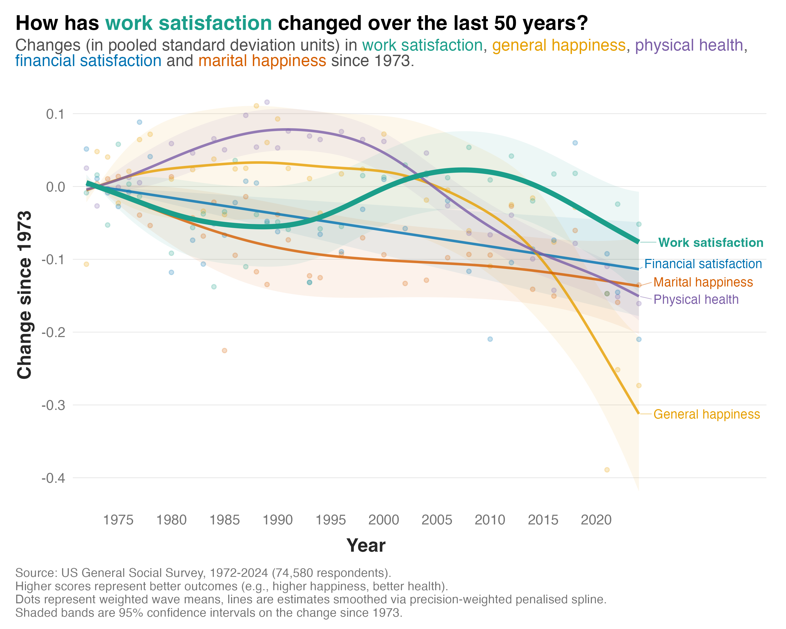

The US General Social Survey has tracked five important dimensions of wellbeing for the last 50 years. Since 1973 it has asked people about their work satisfaction, marital happiness, financial satisfaction, physical health, and general happiness. Across 35 waves, 74,580 people have answered at least one of those five questions.
Four of these dimensions have declined over the last five decades. One has stayed fairly consistent.
The graph below shows the trends in these five dimensions over the 50-year period. Here's what it shows:

1) General happiness, physical health, financial satisfaction, and marital happiness have all fallen over this time frame. The largest decrease has been in general happiness, with virtually all of the decline happening in the last 20 years.
2) Work satisfaction has been relatively flat. Although the graph shows a slight dip in the late 1980s and a small peak around 2010, the linear trend is virtually nil and the confidence interval on the smoothed estimate almost always includes zero. An exception is the most recent wave. Is this suggesting that work satisfaction is finally dropping off? It's too early to tell.
It should be noted that this study is a repeated cross section, not a panel. So different people are participating each year. And each dimension applies to a slightly different population. Only those with a job get asked the work satisfaction question, only those who are married get asked about marital happiness, and both of those populations have changed a lot since 1973.
Nevertheless, the pattern is an interesting one. Over half a century in which Americans became less happy, less healthy, and less satisfied with their money and their marriages, they haven't shown similar shifts in how they feel about work.